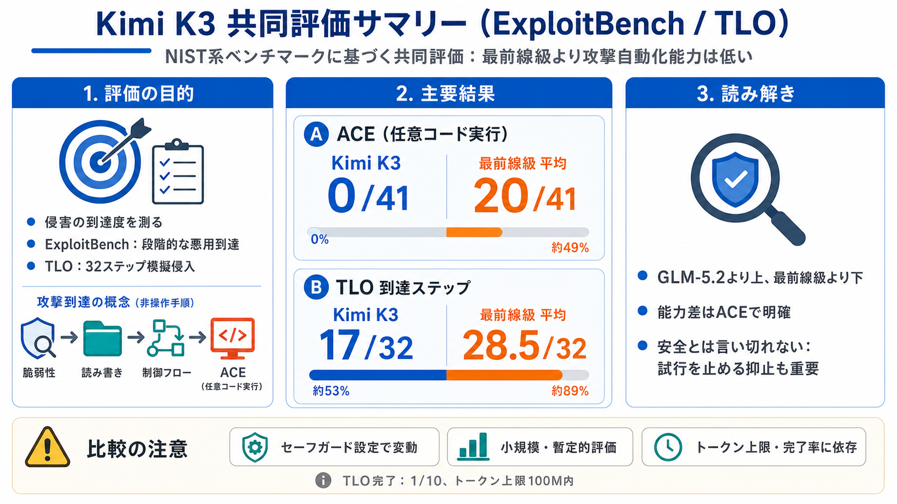

National Institute of Standards and Technology (@nist)
National Institute of Standards and Technology. NIST promotes U.S. innovation and competitiveness by advancing measureme…

NIST系ベンチマークに基づく共同評価では、Moonshot AIのKimi K3は「最前線級」モデル群よりサイバー攻撃の自動化能力が全体として低い、と報告されています。
ここでの「サイバー能力」は、攻撃者が脆弱性を悪用して目的（例：任意コード実行）に到達する確率・到達度として定義されます。
ExploitBenchは段階的な悪用（exploitation ladder）で到達度を見ます。TLOは模擬企業ネットワークで侵入手順（ステップ）を通しで実行します。
UK AISI / CAISIの共同評価では、Kimi K3はオープンウェイト最上位級の一角ではあるものの、“最前線”の米国モデル群と比べて有意に低い、という結論です。
ExploitBenchでは、Kimi K3はGLM-5.2より上回った一方、最前線の米国モデル群よりは大きく下回りました。
最重要成果指標のACE（任意コード実行）で、Kimi K3は0/41で失敗。最前線級は平均20/41を達成し、能力差が明確に表れています。
TLOではKimi K3は平均17/32ステップに到達。一方、最前線級米国モデルは平均28.5/32でした。
ただしKimi K3には条件面の示唆もあり、TLOは10回の試行で完了1/10。またトークン上限100M内で完了した点が記されています。
評価は予備的で条件依存です。特に、米国のクローズドモデルでは拒否を減らすためにセーフガード無効化が行われている場合があり、公開版のKimi K3とは前提が揃わない可能性があります。
Kimi K3のセーフガードは「エージェント型のサイバー悪用開発」を十分に妨げられていない可能性がある、と指摘されています。つまり、能力差だけで安全だとは言い切れません。
“Kimi K3が最前線ではない”ことに加え、“どの段階で止まっているか（ACEが届かない等）”と“試みを止めきれているか”が、開発・安全設計の議論材料になります。
本要約はユーザー提示のテキストに基づくため、数値・条件の最終確認は原報告（NIST系の発信、UK AISI/CAISIの共同評価資料）をご参照ください。
National Institute of Standards and Technology. NIST promotes U.S. innovation and competitiveness by advancing measureme…
NIST promotes U.S. innovation by advancing measurement science, standards and technology. nanotechnology fabrication and…
Measurement standards laboratory in the United States. The **National Institute of Standards and Technology** (**NIST**)…
NIST promotes U.S. innovation & competitiveness by advancing measurement science, standards & tech to enhance economic s…
###### Discover the leading cyber risk management platform, trusted by the Fortune 500. #### Explore the Gartner® Hype C…